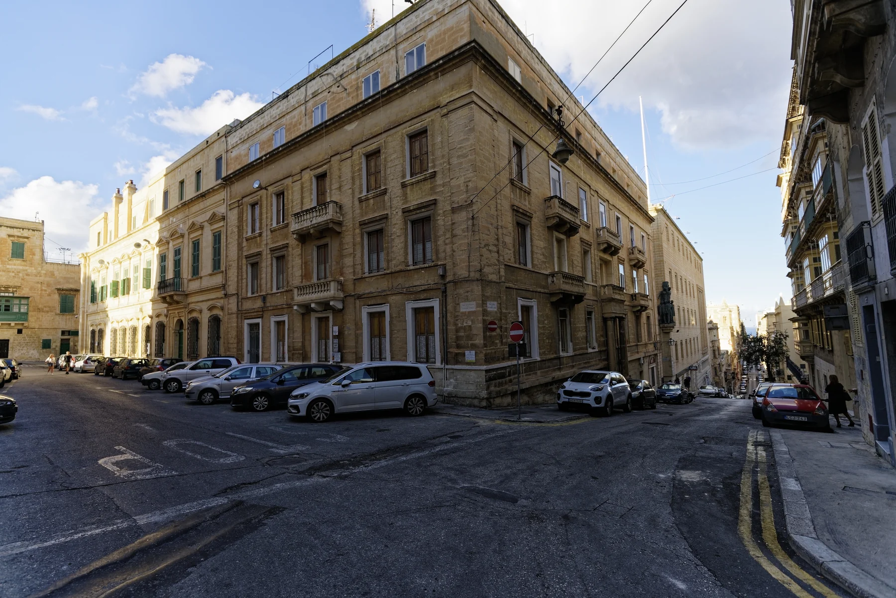

The inventory exposes a locality centre, not the listed building. A broad Valletta label cannot establish the block, entrance, floor, harbour side or walking route.

IL-BELT VALLETTA · MALTAThe capital,
The capital,
street by street.
Valletta is a compact fortified city, but its slopes, harbour sides and transport endpoints change how each address works. Start with the exact street, then build the viewing day around it.
READ THE CITY
A grid shaped by two harbours.
UNESCO records a planned late-Renaissance city on a hilly peninsula between Marsamxett and Grand Harbour. The grid is compact on a map; real street gradients, steps and waterfront levels still need an address-level check.
Slopes, steps, pavements and lifts belong to a specific route. No city-wide walkability or accessibility promise replaces an on-site check.
Floriana, the cruise-terminal waterfront, Sliema and the Three Cities are useful orientation points. They are not interchangeable with the walled city.
MUŻA on Merchants Street.
Heritage Malta places the National Community Art Museum in the historic Auberge d'Italie. Its live page is the source for current opening, tickets and access information; none of those changing details is frozen here.
Heritage Malta — MUŻA ↗The old abattoir, reused.
The Valletta Cultural Agency describes the Valletta Design Cluster as a community space for cultural and creative practice in Il-Biċċerija l-Antika, with workspaces and a public roof garden. Programme and access should always be checked live.
Valletta Design Cluster ↗EVERYDAY CHECKS
A capital that still has daily errands.
These operator and public-service pages help structure a viewing day. They are not rankings and do not prove which destination is nearest to a listed home. Recheck status, hours, stops and the permitted route before travelling.
SPAR Valletta
The operator places its Valletta store on Republic Street. Use the live store page for current services and hours.
SPAR operator page ↗Is-Suq tal-Belt
The operator places its food market, food court and restaurants on Triq il-Merkanti. This is one verified city anchor, not a city-wide convenience claim.
Market operator page ↗Live route directory
Malta Public Transport publishes the current Valletta termini, routes and service updates. This preview freezes no stop, departure or frequency.
Current routes and timetables ↗Two ferry corridors
The ferry operator publishes separate Sliema–Valletta and Valletta–Three Cities services. Seasonal times and fares stay on its live schedule.
Current ferry schedule ↗FOOD WITHOUT A RANKING
One market, two sourced formats.
Is-Suq tal-Belt's own current site provides examples without review scores or a “best of” list. Its address and operator descriptions do not prove proximity to the listed home, and live trading details can change.
Food market
The operator describes a grocery market with fresh-produce and food counters. Check the live page for today's availability and opening information.
Is-Suq tal-Belt operator page ↗Bus Stop Lounge
The same operator currently lists Bus Stop Lounge within the market complex. This is an example from the venue's own channel, not an endorsement or price claim.
Is-Suq tal-Belt operator page ↗A harbour crossing is a ferry leg.
This preview draws no route. If a real itinerary crosses Marsamxett or Grand Harbour by ferry, the result must identify that mode and keep its timetable and waiting uncertainty separate. A blue line over water is never a walking route.
Open the city overview only when you need it.
The map frames Valletta and surrounding place labels for orientation. It deliberately draws no heritage boundary, property pin, route, ferry line, distance or travel time and loads from OpenStreetMap only after your click.
Valletta Local Council · UNESCO World Heritage Centre · Address Registrar · Heritage Malta — MUŻA · Heritage Malta — Fort St Elmo · Valletta Cultural Agency · SPAR Malta · Is-Suq tal-Belt · Malta Public Transport · Valletta Ferry Services
Editorial preview only. No ranking, fixed opening hours, menu, property-specific distance, guaranteed view, parking claim, accessibility promise or city-wide journey time is implied.